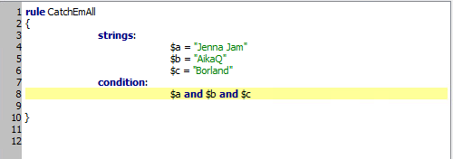
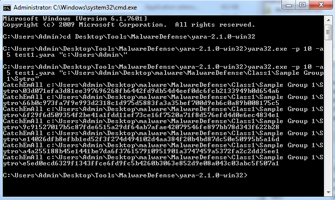
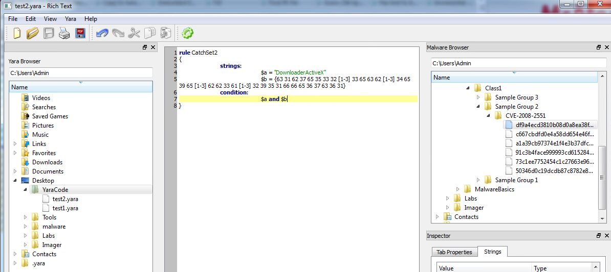
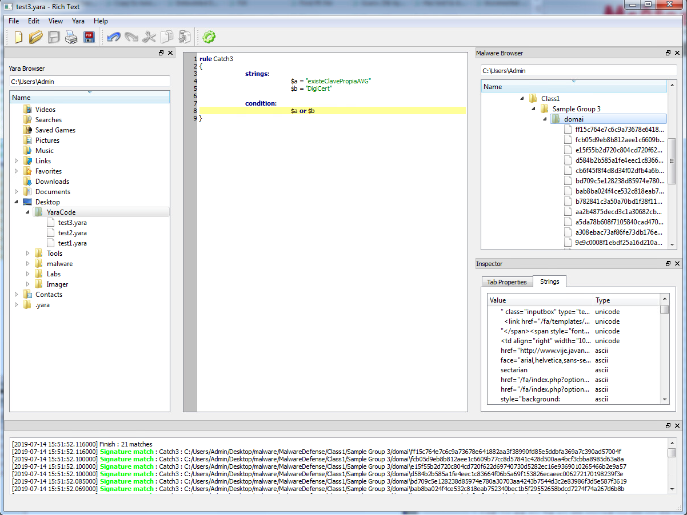
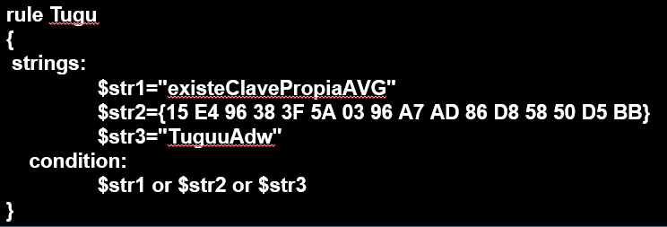
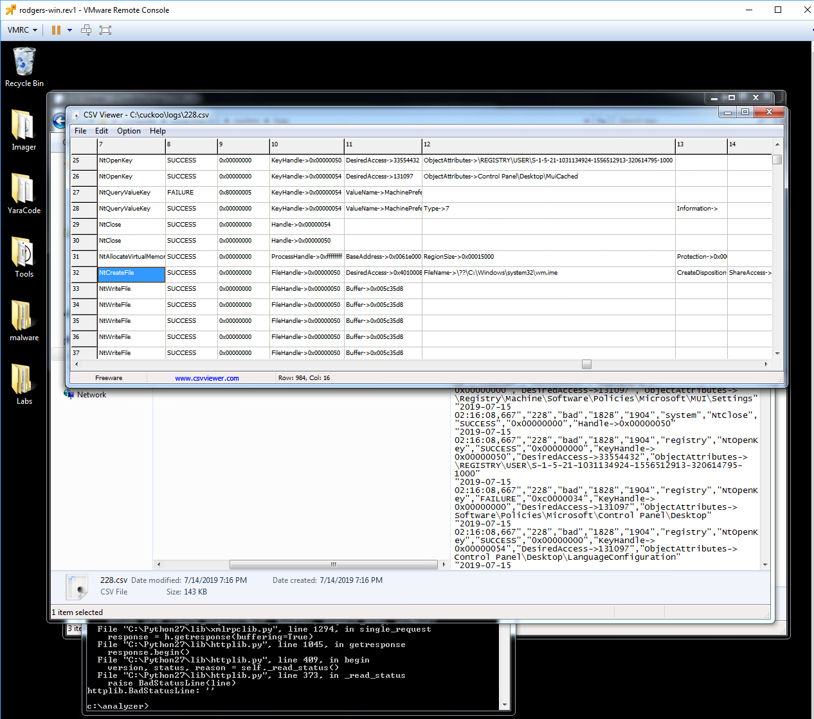
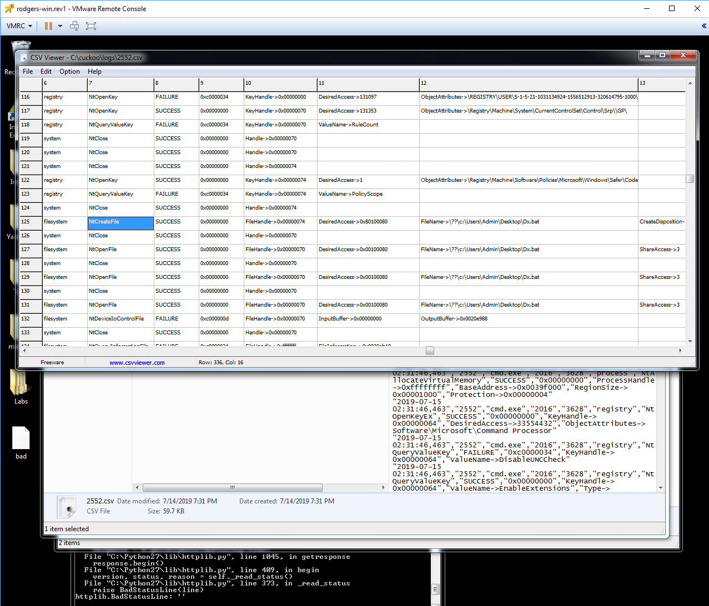
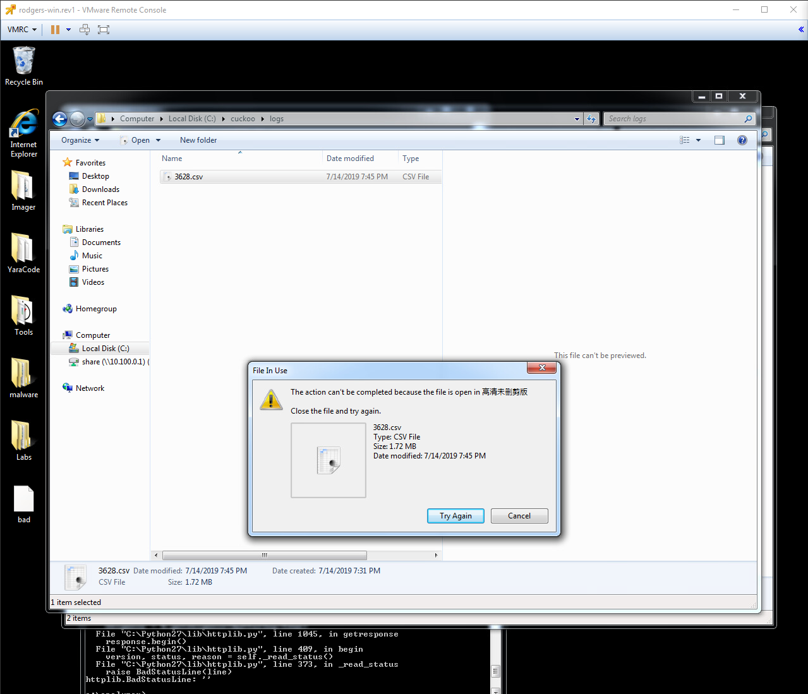
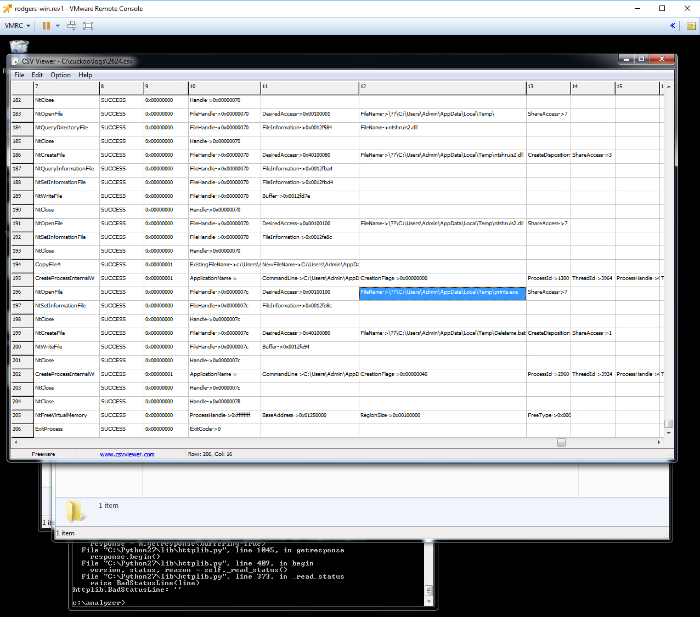
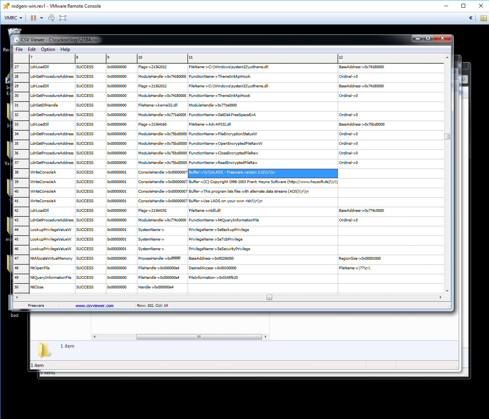

CS373 Weekly Write-Up 3
This week, now that we have already covered Identifying malware by its effects, we began to cover defence against malware by analyzing some samples and writing our own AV detection code in yara.
In Malware Defenses Lesson 1 we covered these areas:
1. The Attack Graph
The attack graph covers the 4 main stages of a malware attack, beginning with “First Contact”. First contact works just like we have learned in previous lectures, with many different vectors for infection. The most common are email (like worms), Malvertising (fake advertising on websites), Watering Hole, and Instant Messaging, with less common examples like Physical Access and Poisoned search results (only less common if using a highly engineered search engine like google). These tend to rely on social engineering, or exploiting a weakness in the system, and sometimes a combination of both.
The 2nd stage is Local Execution. This is fairly straightforward, the malicious program needs some way to execute itself or convince a user to execute the code. Like before, execution relies on either social engineering (clicking on a link from a friend in an email) or an exploit in the system (like abusing the auto-run).
The 3rd stage is more complicated, titled “Establish Presence” this is the part of the attack where the program needs to blend in or hide so that it is not scrubbed by the AV or even just noticed by a particularly observant user. Tactics for blending in include having file names that mimic the naming structures in the OS, changing the timestamps, and signed binaries so that the AV wont detect it. More complex methods include using a Bootkit or Rootkit to hide the files or other similar tasks.
The 4th stage is Malicious Activity, where the malware is running and attempting to accomplish its goals, whatever those may be.
The question of defense becomes “How do we stop malicious programs at each stage?” so that if the malware gets past one layer it is not free to proceed to the next. A good malware defense does this using a number of strategies including traditional file scanning, checking the registry and cookies, cloud scanning, memory scanning, decomposition, and more. From here we began Lab 1.
2. Yara and more advanced yara signatures.
For the first lab we began to work with Yara, a malware identification tool that uses rules and conditions to match with and identify potential malware files.
In the first part of the first lab we used both the yara editor and FileInsight to take a look at the first sample group of malware files. FileInsight is particularly useful as it’s “StringsAll” plugin lets us pull a large number of strings from the file that we can search through for patterns.


By analysing the strings we can see potentially malicious strings that the files have in common, like “OFTWARE\Borland\Delphi\RTL”, “Jenna Jam”, and “AikaQus”.
We can use these strings in our rules in yara to identify the files like so:

And we can see that it properly catches the files when run in the command line:

It turns out my string “Borland” that is looking to catch the language the malware is written in is actually unnecessary as the instructors yara code, provided in the lab debrief, only contains Jenna Jam and AikaQ and still catches all files, however I chose to leave mine in.
We then moved on to the 2nd sample group. To get this set covered we need to look for the particular exploit being used by the files, specifically Downloader ActiveX.

We finally wrap up with the 3rd set, and while this is where the lecture videos end I was still able to take a good swing at it. The auto-generated strings weren’t particularly helpful to me, however manual string evaluation lead me to a couple suspect strings. Using a weird AVG search (the malware is asking if there is AVG installed) and the DigiCert strings I was able to catch 21 of the files

As I entered the 2nd set of lectures I discovered that the Instructor has similar yara code to what I was able to find:

This yara code has one of the 3 strings in common with mine, which suggests that “DigiCert” might generate false positives and that I should look into it more. Tuguu is an adware distributor, so that string is a giveaway that I initially missed.
This method of AV (file detection) is most useful before a file has executed.
Malware Defenses Lesson 2:
AV Automation is becoming more and more common to keep up with the creation of new malware. While they are fast and effective at chewing through lots of malware, automated analysis is considered “out of context” that is, not operating in the real world. Because of this it is possible for malware to detect that it is in a virtual machine and can evade the automated system. One new tool that we will be using is Cuckoo, which can be used to automate the analysis process.
3. Cuckoo for automated analysis.
We are given 4 files beginning 068D, 0067, 4844, and A187. Of which it looks like only 4844 is safe
068D:

Info: As we can see from the Cuckoo log it creates a suspect file “wm.ime” and accessed KeyHandle, a lot, and registry values relating for the keyboard are accessed multiple times.
Conclusion: It might be a keylogger, although im not certain.
0067:


Info: It creates a strange file called dx.bat, accesses the registry keys for HideDesktopIcons (most likely responsible for the creation of an Internet Explorer link that then promptly disappeared), and tries to open the unknown file qusla.exe. also see image 2 when I tried to delete the .csv files and the bad.exe to prepare for the next file, something very strange is going on.
Conclusion: Malicious, although I'm not 100% sure what its doing.
A187:

Info: Like the other 2 this program creates a number of weird files like “deleteme.bat” and “ntshruis2.dll.bin”, it also tries to access a file called prints.exe. “Bad” was also deleted upon completion.
Conclusion: Probably malicious
4844:

Unlike the others, 4844 does not appear to do anything strange. It claims that its freeware called “LADS”, and while that by itself isn’t an indicator of cleanliness, their doesn’t seem to be anything suspicious in the logs.